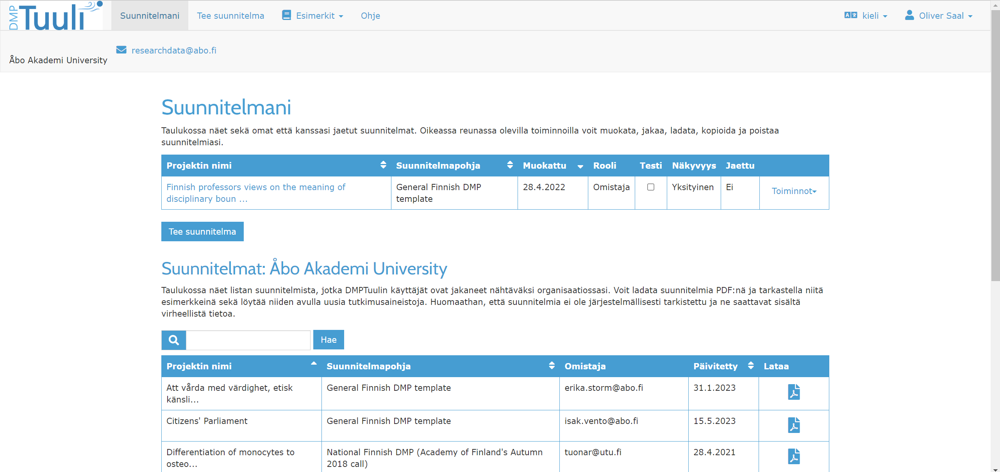
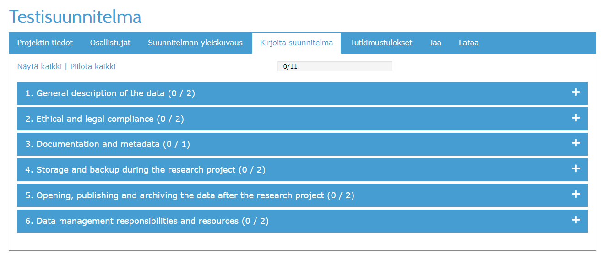

5 DMPTuuli
DMPTuuli on DMP-konsortion ylläpitämä työkalu, jolla voit luoda tietojenkäsittelysuunnitelmia tutkimuksellesi. Pelastusopistolla ei tällä hetkellä ole käyttöoikeuksia DMPTuuliin, mutta useimmilla yliopistoilla, tutkimuslaitoksilla, ammattikorkeakouluilla (ml. Savonia) sekä joillain ministeriöillä pääsee käyttämään työkalua. Voit kuitenkin ladata valmiita tiedonhallintasuunnitelmia ilman rekisteröintiä.
Kirjaudu käyttämällä organisaatiosi HAKA-tunnistusta. Tämän jälkeen sinun tulee tehdä käyttäjätili DMPTuuleen, jonka avulla voit myöhemmin kirjautua ilman HAKA-tunnistusta.
5.1 Yleisnäkymä
Kirjautuessasi sisään näet DMPTuulen yleisnäkymän (Kuva 5.1).

Alueen keskeltä voit nähdä omat suunnitelmasi, sekä laatia uuden suunnitelman. Jos painat “Uusi suunnitelma” -nappia, pääset määrittelemään suunitelman nimen, organisaation ja rahoittajan (Kuva 5.2). Nämä vaikuttavat suunnitelman osiin - tietyt rahoittajat vaativat tietynlaisia osuuksia suunnitelmassa.

5.2 Suunnitelman muokkaus ja tallennus
Kun olet tehnyt suunnitelman, pääset näkymään, josta pääset muokkaamaan suunnitelman eri osia. Näkymä on jaettu välilehtiin. Ensimmäisessä välilehdessä syötät projektin yleistietoja (Kuva 5.3). Tähän voit syöttää abstraktin, tutkimusalueen, projektin ajanjakson sekä rahoittajatietoja.

Osallistujat-välilehdellä voit määritellä, ketkä tahot ovat mukana kirjoittamassa projektin suunnitelmaa. Paina “Lisää uusi osallistuja” määritelläksesi osallistujan tiedot, sekä mitkä roolit hän ottaa tietojenkäsittelysuunnitelman myötä (Kuva 5.4). Nämä ovat henkilötietojen lailliset käsittelijäryhmät, ja vaikuttavat myös siihen, mitä henkilö voi tehdä DMPTuuleen tallennetussa suunnitelmassa.
Kirjoita suunnitelma -osioissa täytät itse suunnitelman tiedot (Kuva 5.5). Riippuen siitä, minkä pohjan järjestelmä on antanut sinulle (mikä itsessään riippuu mm. kotiorganisaatiosta ja rahoittajasta), voit nähdä osittain erilaisen näkymän. Suunnitelma on jaettu osioihin, jotka voit avata erikseen ja täyttää tiedoillasi. Jokaiselle alueelle on oma ohjeistuksensa. Helpointa on ensin kirjoittaa teksti johonkin tiedostoon, ja sitten siirtää se DMPTuuleen oikeaan osioon, jos verkkoyhteytesi katkeaa kesken kirjoittamisen.

Tutkimustulokset-alueella voit lisätä yksittäisiä tutkimustuloksia, määritellä niiden tyypit, arkistot ja metadatajärjestelmät, sekä ilmaista, millä lisenssillä ne julkaistaan (jos julkaistaan). Järjestelmä ohjeistaa sinua tekemään tämän vasta projektin lopussa, koska tuotannot voivat muuttua - muistakin, että tietojenkäsittelysuunnitelma on elävä dokumentti, jota kannattaa päivitellä koko projektin elinkaaren aikana!

Jaa-välilehdeltä voit jaata DMPTuulen suunnitelman eri tahoille sekä määritellä sen näkyvyyden muille organisaation toimijoille (tai kaikille avoimeksi, jos haluat!).
Lataa-välilehdeltä voit ladata suunnitelman monessa eri muodossa, sekä muokata ladattavan tiedoston muotoilua ja sisältöä.
5.3 Valmiin mallin lataaminen
Voit ladata DMPTuulesta valmiita suunnitelmapohjia, joita voit täytellä suoraan Wordissa tai muussa tekstinkäsittelyohjelmassa. Jos olet kirjautunut, löydät ne yläpalkista osiosta “Esimerkit > Julkiset suunnitelmapohjat”; jos et ole kirjautunut, yläpalkissa lukeekin vain “Julkiset suunnitelmapohjat”.
Pohjia löytyy erittäin paljon, ja voit hakea niitä nimen tai rahoittajan mukaan. Pohja nimeltä “General Finnish DMP template” on yleismalli, jota voit hyödyntää omassa työssäsi. Voit ladata pohjan PDF- tai Word-tiedostona ja selailla sitä. Pohjasta näet samat osiot kuin mitä täyttäisit DMPTuulen käytössä (ks. Alaluku 5.2).